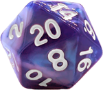
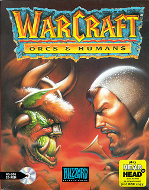
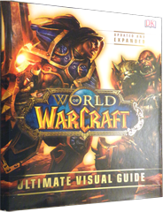

How we Started

Azeroth - A Moment in Time
Is a long ongoing Role Play that holds its roots over 25 years ago with a close group of real-life friends, family, and our shared love for writing and fantasy world-building that we all grew up with. Dungeons & Dragons became our itch for a time though we liked to set up our own worlds and stories with borrowed elements from their campaigns along with our own house rules. So we kind of never played it as it was intended, but we made what we had work and had a lot of fun doing it.
At the end that is what matters right?
The motivation behind building Azeroth - A Moment in Time

We all grew up loving fantasy adventures, dreaming of seeing far-off lands and taking on dangerous foes. For some of us, becoming lost in this land of make-believe helped get them through some rough, and dare says dark times in their lives. For others, it let us drop ourselves into a world and experience things we never would in our real lives.
When the Warcraft games started coming out in the '90s, (who remembers Warcraft: Orcs & Humans?) we would borrow elements from the world before we fully settled on it, converting much of what we had over. It also helped that one of our group may have been more than a bit obsessed with the game and its following titles, something that passed onto the rest of us. It offered a large world to explore and deep characters with ongoing and connecting storylines that we could see and hear instead of just reading text from gamebooks. I dare say it also had better concepts and stories than what we were dreaming up at the time.
The Warcraft RPG that started in 2003 also used the same system as Dungeons & Dragons (Warcraft is based off D&D) and gave us a far more solid foundation than what we made up on our own. A lot of our Roleplays and stories today still follow some lore and elements from it even if now a lot of it is listed as 'non-canon'.
Though as the wiki states:
"Although the RPG books are not considered part of the official canon, Blizzard has incorporated some ideas and material originally introduced in the RPG into the games and other official sources. As a result, elements of the RPG may later appear in canonical Warcraft material, while other material remains exclusive to the RPG."
Genre

We attempt to follow as close to Warcraft's set lore as we can, though understand that over time such has sort of.... become lackluster due to past writers for the Warcraft World leaving.
This has left many story arcs and world concepts we see in the games and books to be as we put it, half-assed, with parts often forgotten, or retconned rather internally or not. Or have key stresses on moments in past expansions of the games and the world's story be overlooked or treated as if they never happened. Wrathion's whole Pandaria campaign anyone? How many players entered Battle for Azeroth and never knew who Wrathion was when he showed up.
That said, we try to keep things running smoothly, filling in these gaps with our own concepts that at least to us still fit into the flow of the world without straying too far from cannon information.
Character Agency
We make it a direct point that in no way is any of our characters ever to be viewed or portrayed as ‘THE Hero’. Despite how the Warcraft Games these days try to make the players seem as such. It’s something we mostly agree feels off seeing how many other players are roaming around.
The past expansion’s did this concept best, portraying us as players as if we were but one of many being called to arms. A fact that yes, as players was very true, it fit the way we played the game together, joining up for Raids and other events. Who remembers the huge joint effort for the WORLD event 'The Gates of Ahn'Qiraj'? Or how we came together joining the Shattered Sun Offensive to help reclaim the Sunwell? Or the mighty Argent Crusade that brought the factions together in Ice Crown against the Lich King. In those times we were never THE hero, just one of many who answered the call to arms to fight back against a bigger threat.
However now the game is all about us being THE Hero, THE Champion! It feels less about the people coming together to ward off our foes and more of the awkward ‘YOU are the only one who can do this even though there are countless others we have also told this to, and who are running around also doing only what you can!’
While some of our characters may have had a role to play in some key events in the world, at no point are they to become THE big name champion that overcame all odds above everyone else. No, if anything they are just another face in a sea of faces taking part in whatever venture they got roped into. As said, being “one of many being called to arms”.
As for Key world Characters/NPC’s. We do allow our characters to know, and be known by Official Characters seen in the Warcraft World, but in no more a way than what may fill a standard encounter.
Example: A character working for Stormwind’s SI:7 is going to know, and likely be known by it's leader Mathias Shaw. However no ones going to be best buddies with the King. Or somehow become Sylvanas Windrunner's new right hand man (or woman).
As for any Relations/Relationships with Official Characters. That is also kept mostly off the table as it causes far too many issues, more so if said character ends of being killed in later games/books. This is something that has happened with one of our players characters, causing a need for a rewrite of their history to remove ties as it would have been impossible for for events to have happened as they had been written. So no ones going to be someones long lost brother, or be a romantic partner to any of the Official Characters.
Pretty much, we use common sense.
Our Continued Adventures
As the real world moved on, in-person games changed to online interactions across various platforms over the years (team speak, skype, google docs, and now discord) as our lives had divided us across the world, but our hearts have us returning to the crazy adventures we come up with. Some of these have deviated into our own fantasy concepts and worlds but we still keep coming back to where our fun little hobby started and grew.
Over time we did pick up some new faces to join in on our Ventures, while others have sadly left us. When we lose people it's hard, characters, stories, events are often tied across two or more players and impact a lot of what we have made, major defining moments can be lost due to this. So one thing we all settled on is if it's in agreement, those who choose to leave or end up vanishing for one reason or another, their characters and events will be migrated to another's character. Rather the character is newly created to fill in the role, or an existing one who still fits it. It may not always feel the same, (like if the characters were romantically involved) but it allows us to move forward without the awkwardness of creating a reason for why these characters are suddenly not there, or try and move on like they and the events relating to them never happened or existed.
We don't like throwing out what we have made, most of it could be years of sessions and concepts. While we have all gone and looked back at our older works we would rather work together to see if there is anything we may want to change or redo. Only once have we truly thrown out full sessions due to no longer liking the direction things had gone or choices that were made. But even with that, we created a story-driven means to make such events be altered or a canon reason why they never happened. (Time Travel, a bit overused but it works!)